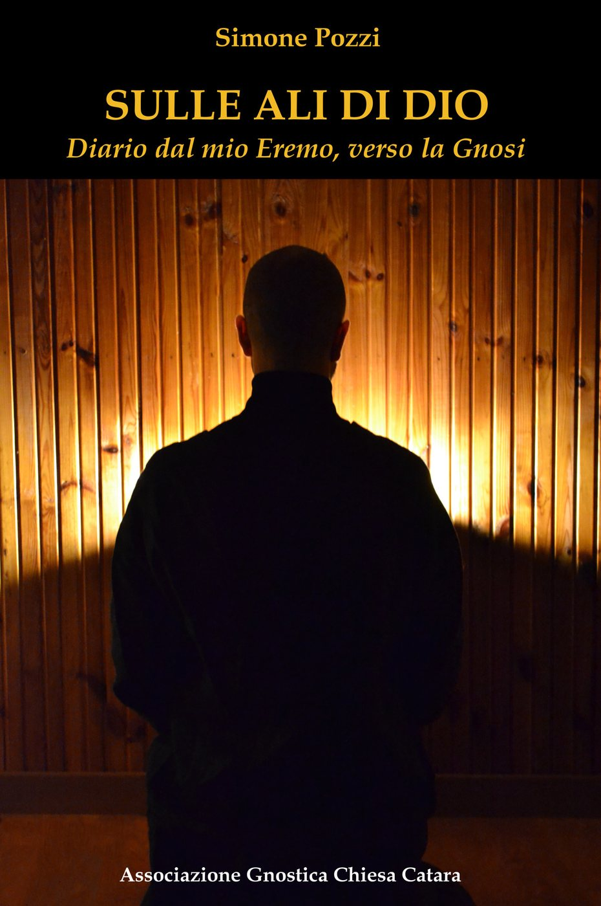
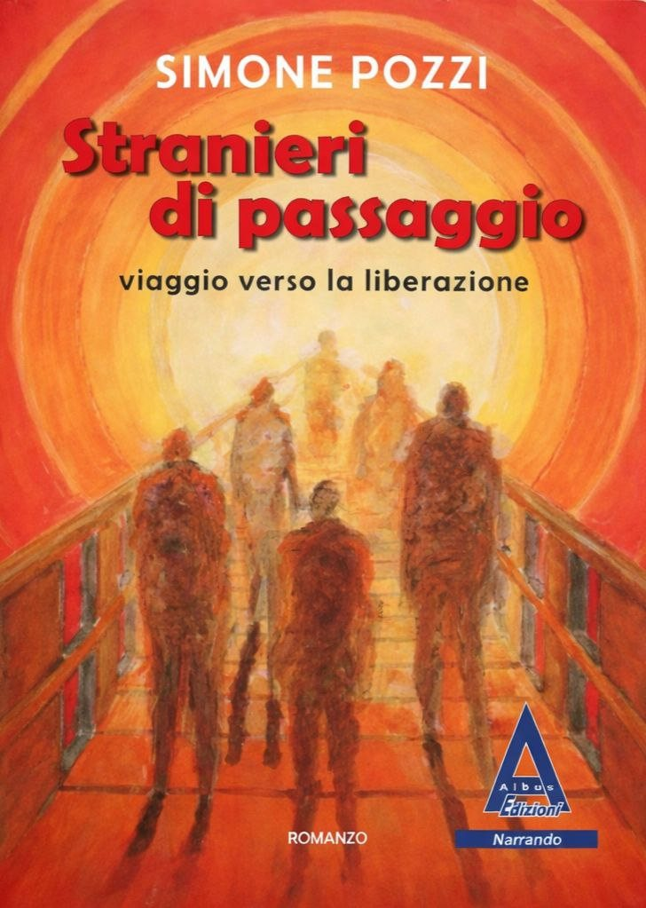
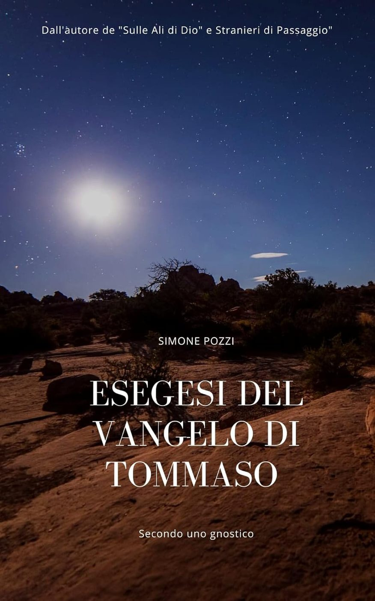
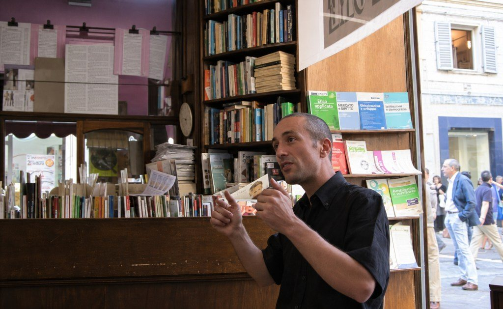

Publications
This page lists books by Simone Pozzi, creator and editor of Duhovno nasleđe Balkana. They are personal works of autobiographical, narrative, and spiritual writing. They are not specialist studies of Bogomilism and are not sources used to support the historical reconstructions on this site.
Books
Sulle Ali di Dio

Diary from my hermitage, towards Gnosis. An autobiographical account of a choice to live as a hermit and the spiritual experiences that shaped that path.
Stranieri di passaggio

Journey towards liberation. A symbolic novel begun in 2007, before the author’s encounter with Gnosis. Through images of travel and inquiry, it reflects on the human journey and freedom.
Out of distribution: contact me to request a copy
Esegesi del Vangelo di Tommaso secondo uno gnostico

A reading to be lived. A personal commentary on the Gospel of Thomas, offered from the author’s perspective and distinct from a critical edition or historical study of the text.
A meeting with readers
The following photograph documents a public book presentation. It has been digitally restored to improve legibility; some background details have been reconstructed.
